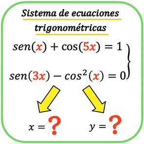
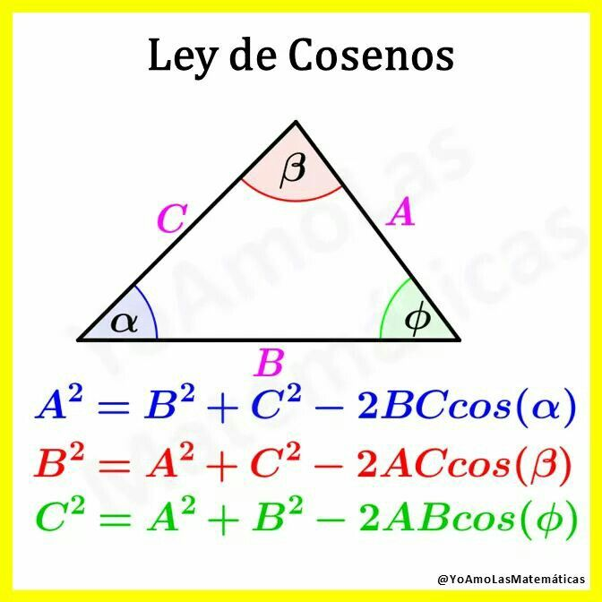

Son las ecuaciones en las que la incógnita está afectada por una función trigonométrica. Como éstas son periódicas, habrá por lo general infinitas soluciones.

FORMULAS
LEY DE SENOS

LEY DE COSENOS